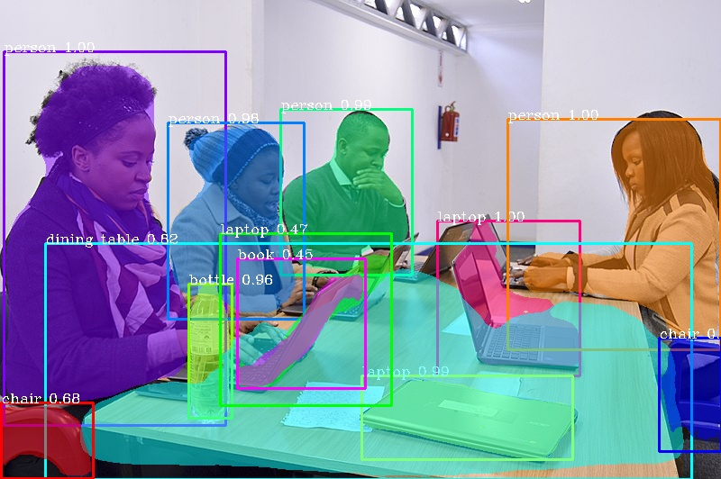

Instance segmentation of images with PixelLib¶
Instance segmentation with PixelLib is based on MaskRCNN framework.
Download the mask rcnn model from here
Code to implement instance segmentation:
import pixellib
from pixellib.instance import instance_segmentation
segment_image = instance_segmentation()
segment_image.load_model("mask_rcnn_coco.h5")
segment_image.segmentImage("path_to_image", output_image_name = "output_image_path")
Observing each line of code:
import pixellib
from pixellib.instance import instance_segmentation
segment_image = instance_segmentation()
The class for performing instance segmentation is imported and we created an instance of the class.
segment_image.load_model("mask_rcnn_coco.h5")
This is the code to load the mask rcnn model to perform instance segmentation.
segment_image.segmentImage("path_to_image", output_image_name = "output_image_path")
This is the code to perform instance segmentation on an image and it takes two parameters:
path_to_image: The path to the image to be predicted by the model.
output_image_name: The path to save the segmentation result. It will be saved in your current working directory.
Sample2.jpg

Image’s source:Wikicommons
import pixellib
from pixellib.instance import instance_segmentation
segment_image = instance_segmentation()
segment_image.load_model("mask_rcnn_coco.h5")
segment_image.segmentImage("sample2.jpg", output_image_name = "image_new.jpg")

This is the saved image in your current working directory.
You can implement segmentation with bounding boxes. This can be achieved by modifying the code.
segment_image.segmentImage("sample2.jpg", output_image_name = "image_new.jpg", show_bboxes = True)
We added an extra parameter show_bboxes and set it to true, the segmentation masks are produced with bounding boxes.

You get a saved image with both segmentation masks and bounding boxes.
Extraction of Segmented Objects
PixelLib now makes it possible to extract each of the segmented objects in an image and save each of the object extracted as a separate image. This is the modified code below;

import pixellib
from pixellib.instance import instance_segmentation
seg = instance_segmentation()
seg.load_model("mask_rcnn_coco.h5")
seg.segmentImage("sample2.jpg", show_bboxes=True, output_image_name="output.jpg",
extract_segmented_objects= True, save_extracted_objects=True)
We introduced new parameters in the segmentImage function which are:
extract_segmented_objects: This parameter handles the extraction of each of the segmented object in the image.
save_extracted_objects: This parameter saves each of the extracted object as a separate image.Each of the object extracted in the image would be save with the name segmented_object with the corresponding index number such as segmented_object_1.
These are the objects extracted from the image above.


Detection of Target Classes
The pre-trained coco model used detects 80 classes of objects. PixelLib has made it possible to filter out unused detections and detect the classes you want.
Code to detect target classes
import pixellib
from pixellib.instance import instance_segmentation
seg = instance_segmentation()
seg.load_model("mask_rcnn_coco.h5")
target_classes = seg.select_target_classes(person=True)
seg.segmentImage("sample2.jpg", segment_target_classes= target_classes, show_bboxes=True, output_image_name="a.jpg")
target_classes = seg.select_target_classes(person=True)
seg.segmentImage("sample2.jpg", segment_target_classes= target_classes, show_bboxes=True, output_image_name="a.jpg")
We introduced a new function select_target_classes that determines the target class to be detected. In this case we want to detect only person in the image. In the function segmentImage we added a new parameter segment_target_classes to filter unused detections and detect only the target class.

Beautiful Result! We were able to filter other detections and detect only the people in the image.
Speed Adjustments for Faster Inference
PixelLib now supports the ability to adjust the speed of detection according to a user’s needs. The inference speed with a minimal reduction in the accuracy of detection. There are three main parameters that control the speed of detection.
1 average
2 fast
3 rapid
By default the detection speed is about 1 second for a processing a single image.

average detection mode
import pixellib
from pixellib.instance import instance_segmentation
segment_image = instance_segmentation(infer_speed = "average" )
segment_image.load_model("mask_rcnn_coco.h5")
segment_image.segmentImage("sample.jpg", show_bboxes = True, output_image_name = "new.jpg")
In the modified code above within the class instance_segmentation we introduced a new parameter infer_speed which determines the speed of detection and it was set to average. The average value reduces the detection to half of its original speed, the detection speed would become 0.5 seconds for processing a single image.
Output Image

We obtained beautiful results with average detection speed mode.
fast detection mode
import pixellib
from pixellib.instance import instance_segmentation
segment_image = instance_segmentation(infer_speed = "fast" )
segment_image.load_model("mask_rcnn_coco.h5")
segment_image.segmentImage("sample.jpg", show_bboxes = True, output_image_name = "new.jpg")
In the code above we replaced the infer_speed value to fast and the speed of detection is about 0.35 seconds for processing a single image.
Output Image
Our results are still wonderful with fast detection speed mode.
rapid detection mode
import pixellib
from pixellib.instance import instance_segmentation
segment_image = instance_segmentation(infer_speed = "rapid" )
segment_image.load_model("mask_rcnn_coco.h5")
segment_image.segmentImage("sample.jpg", show_bboxes = True, output_image_name = "new.jpg")
In the code above we replaced the infer_speed value to rapid which is the fastest detection mode. The speed of detection becomes 0.25 seconds for processing a single image.
Output Image

The rapid detection speed mode produces good results with the fastest inference speed.
Note These inference reports are obtained using Nvidia GeForce 1650.
Specialised uses of PixelLib may require you to return the array of the segmentation’s output.
Obtain the following arrays:
-Detected Objects’ arrays
-Objects’ corresponding class_ids’ arrays
-Segmentation masks’ arrays
-Output’s array
By using this code
segmask, output = segment_image.segmentImage()
You can test the code for obtaining arrays and print out the shape of the output by modifying the instance segmentation code below.
import pixellib
from pixellib.instance import instance_segmentation
import cv2
instance_seg = instance_segmentation()
instance_seg.load_model("mask_rcnn_coco.h5")
segmask, output = instance_seg.segmentImage("sample2.jpg")
cv2.imwrite("img.jpg", output)
print(output.shape)
Obtain arrays of segmentation with bounding boxes by including the parameter show_bboxes.
segmask, output = segment_image.segmentImage(show_bboxes = True)
import pixellib
from pixellib.instance import instance_segmentation
import cv2
instance_seg = instance_segmentation()
instance_seg.load_model("mask_rcnn_coco.h5")
segmask, output = instance_seg.segmentImage("sample2.jpg", show_bboxes= True)
cv2.imwrite("img.jpg", output)
print(output.shape)
Note: Access mask’s values using segmask[‘masks’], bounding box coordinates using segmask[‘rois’], class ids using segmask[‘class_ids’].
segmask, output = segment_image.segmentImage(show_bboxes = True, extract_segmented_objects= True )
Access the value of the extracted and croped segmented object using segmask[‘extracted_objects’]
Process opencv’s frames
import pixellib
from pixellib.instance import instance_segmentation
import cv2
segment_frame = instance_segmentation()
segment_frame.load_model("mask_rcnn_coco.h5")
capture = cv2.VideoCapture(0)
while True:
ret, frame = capture.read()
segment_video.segmentFrame(frame)